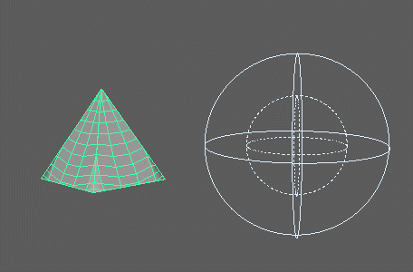

将连接的网格融合至同一网格的其他版本中。但与常规“融合变形器”(Blend Deformer)不同，此融合可与 MASH 衰减对象、贴图等进行交互。它不需要使用 MASH 网络。
融合变形器
连接(Connections)
- 融合网格(Blend Mesh)
- 显示当前正在融合的网格。若要指定选定的网格，则可以使用鼠标中键将此网格拖到此字段中，或者在此字段上单击鼠标右键并单击 “连接”(Connect)。
注： 凡用作“融合网格”(Blend Mesh)的网格，均必须与融合至其中的网格具有相同的顶点排列。
- 导向曲线(Guide Curve)
- 显示对象在融合过程中将遵循的曲线。若要指定选定的曲线，则可以使用鼠标中键将此网格拖到此字段中，或者在此字段上单击鼠标右键并单击 “连接”(Connect)。
- 融合值(Blend Value)
- 确定源对象和结束对象之间的融合级别。
- 膨胀(Inflate)
- 向外展开网格顶点。
- 平滑迭代次数(Smoothing Iterations)
- 增加源形状和目标形状之间的整体平滑。较高的值将导致即便在 0 和完全强度处亦为二者融合的形状。
- 融化(Melt)
- 解除融合过程中的顶点。
渐变
此部分包含用来控制其相关属性的形状对源对象影响的渐变，常见于使用“衰减对象”(Falloff Object)时。对于每个渐变，左侧表示受影响区域内的区域，而右侧则表示最大强度处的融合。
强度(Strength)
-
强度(Strength)
- 同时减弱对所有顶点的节点效果。
-
随机强度(Random Strength)
- 按随机顺序平滑地减弱顶点的节点效果。
-
阶跃强度(Step Strength)
- 每次禁用一个顶点的节点效果。
-
强度贴图(Strength Map)
- 确定输入文件（2D 纹理、动画纹理等）来控制该节点的效果。
-
贴图投影轴(Map Projection Axis)
- 确定投影“强度贴图”(Strength Map)时所沿的轴。
-
贴图辅助对象(Map Helper)
- 显示用于在场景中交互确定随机影响的对象。
-
创建贴图辅助对象(Create Map Helper)
- 创建新的定位器，并将其连接到“贴图辅助对象”(Map Helper)。
-
连接贴图辅助对象(Connect Map Helper)
- 将选定对象连接到“贴图辅助对象”(Map Helper)。